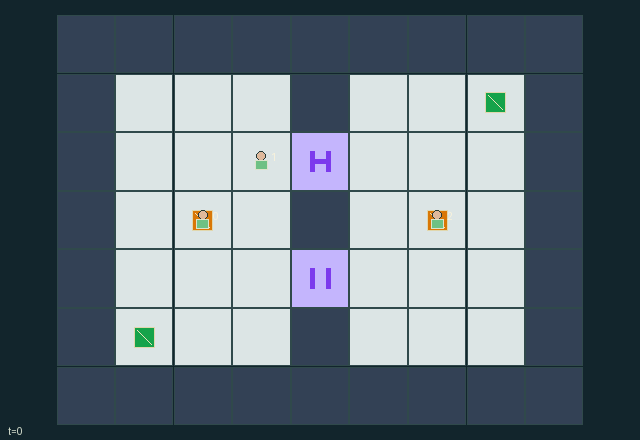

GI184 · Rotating Keep

Each actor claims one destination and may then keep helping. Matching its private preference yields the larger individual reward; every claim also benefits peers.
Identity and original contract
3 independently actionable roles; 10 discrete commands per role; 88 native observation columns per role; original horizon 96 steps. Declared per-step reward range: 0 to 3. Observation regime: partially_observable.
Source SHA-256: 4ba373dc6b71975fd04946468ce0199e683f036d3f31f535e51e16728ffb8f03
The objective, rewards, population, map and horizon remain original. A preview is not a success claim.
Objective and gameplay
Each actor claims one destination and may then keep helping. Matching its private preference yields the larger individual reward; every claim also benefits peers.
Matching colored keys and console charges enable a delayed global route change. Closing a door waits for its occupant to leave. Actors can hand keys over, hold a threshold or redirect which crossing peers may use.
- A north and south threshold share one phase. Phase 0 desires north open; phase 1 desires south open.
- Matching amber or azure keys operate their corresponding consoles. Each console has three finite charges.
- One request can be pending. It matures after two later transitions, after that transition's movement.
- A closing threshold stays open while occupied, then closes when vacated. No actor is teleported.
- Keys may be picked up, dropped and passed to adjacent waiting keyless peers without duplication.
- Actors claim one destination each, then may keep helping. Private destination preferences are not public scene attributes.
- Conflicting empty destinations and requests use cyclic clock-based priority; old occupied cells block entry.
- Door states, pending phase/countdown and charge are actual source state. Replay and animation remain unexecuted.
Ending: All three actors have claimed one destination; otherwise the finite horizon ends the episode.
What this game explores
Information, sensing & communication: Who knows a fact, when it was measured, and whether it was communicated are separate state variables. Test memory or communication using only the same role-visible evidence.
Joint transport & shared access: Positions, load geometry, occupancy and persistent access constrain whose action can succeed next. Distinguish physical handoff, shared controls and simultaneous force from a cosmetic cooperation label.
These are questions supported by rule structure, not observed learning effects.
Play it: operating walkthrough
crucibles play --game gi184Keep Python running and open its printed address. Select this game, set a seed and press Create session. The game itself is always English.
Assign a role range to Host with Assign / take over, or Assign all roles. Invite a second participant with Create player invitation, then assign a disjoint subset. Every original role is available.
For every owned role choose a legal command and press Queue. Arrow keys / WASD queue a declared directional action for the current role camera when available. Space or Advance one joint step advances everyone together. Non-directional games use the selectors.
Unqueued roles use the labelled untrained uniform-legal policy. Take over or release roles before the next step without resetting. Full-state debug is privileged and permanently logged; role cameras preserve permissions. Close the session to retain logs. Server restart does not restore sessions.
Complete command reference
IDs and English labels exactly match the manifest. Availability depends on role, resources, location and phase. An available action can still have no productive effect.
0·Wait / receive key
1·Move north
2·Move east
3·Move south
4·Move west
5·Request delayed rotation at matching keyed console
6·Take a ground key underfoot
7·Claim destination pad once
8·Drop held key underfoot
9·Pass key to adjacent waiting keyless actor
Roles and capability identifiers
These original role names describe capabilities, not interchangeable skins. Check each owned role's legal selector before planning handoffs.
agent_0·Amber-key courier with private destination
agent_1·Keyless courier with private destination
agent_2·Azure-key courier with private destination
Information and observation permissions
Fortress, actors, keys, charges, phase, pending countdown and claims are public. Door target/jam flags are deterministic from public phase and occupancy. Only each observation row's preference is private. Preferences and realized private reward values are omitted from scene/HUD channels.
The GIF is full-state debug and may reveal hidden entities or private state. Train on obs[agent], not the picture, state tree or another role's private row. Field slices and visibility are in the original manifest.
Reinforcement-learning integration
import jax
from crucibles_jaxmarl import make
env = make("gi184")
key = jax.random.PRNGKey(0)
key, rk, ak, sk = jax.random.split(key, 4)
obs, state = jax.jit(env.reset)(rk)
actions = env.sample_actions(ak, state)
obs, state, rewards, dones, info = jax.jit(env.step_env)(sk, state, actions)
done = dones["__all__"]Observations are float32 vectors of width 88; actions are scalar int32; masks have 10 entries. Supply all 3 roles each transition. Masked sampling is an engineering reference, not a trained learner.
step_env retains terminal data without reset. step performs outer autoreset and keeps terminal data in info["raw_state"] and info["raw_observation"]. Use dones["__all__"] for episode boundaries; separate completion, failure and time limit in analysis.
JIT or vmap equal identities and shapes. Split independent reset, policy and transition keys. Group different shapes explicitly; do not shrink the population or horizon. Host rendering stays outside training.
Training questions and fair evaluation
Define valid completion from the objective before fitting. Preserve original rewards and also report real deliveries/services, losses, resource state, unresolved episodes and per-role returns. Animation is not a reward signal.
Who knows a fact, when it was measured, and whether it was communicated are separate state variables. Test memory or communication using only the same role-visible evidence.
Positions, load geometry, occupancy and persistent access constrain whose action can succeed next. Distinguish physical handoff, shared controls and simultaneous force from a cosmetic cooperation label.
Compare memory, communication or centralized critics under matched actor information. Declare critic access; keep actor inputs role-filtered. Match partner/opponent distributions, masks, compute and checkpoint selection. Final tests never enter fitting or selection.
Independent training runs or source-pairing blocks are inferential units; episodes from one policy are not independent training replications. Save hashes, keys, versions, device, time and cost. Negative, zero, failed and indeterminate outcomes are valid. No trained checkpoint or target score is supplied.
Classification and evidence
Overlapping editorial labels are reading aids, not proof of novelty, difficulty, strategic equivalence or learning effects.
- Information, sensing & communication
- Evidence
manifest.task.objective: Each actor claims one destination and may then keep helping. Matching its private preference yields the larger individual reward; every claim also benefits peers.
- Evidence
scene.rules.5: Actors claim one destination each, then may keep helping. Private destination preferences are not public scene attributes.
- Joint transport & shared access
- Evidence
scene.rules.6: Conflicting empty destinations and requests use cyclic clock-based priority; old occupied cells block entry.
Source, receipts and preview limits
The world-only English GIF replays saved untrained legal actions through the original kernel. At most 25 actual endpoints include initial and terminal state; no invented interpolation. It is full-state debug, not the role observation.
Original source, observation slices, manifest and mechanism
Native receipt · Presentation receipt
Engineering passes do not establish learning. Nonzero floating differences remain recorded and undetermined; no new tolerance was introduced. Human scores remain unverified.